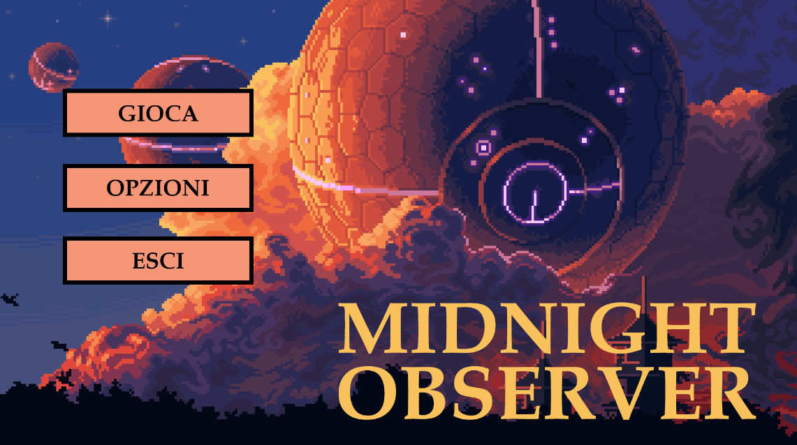
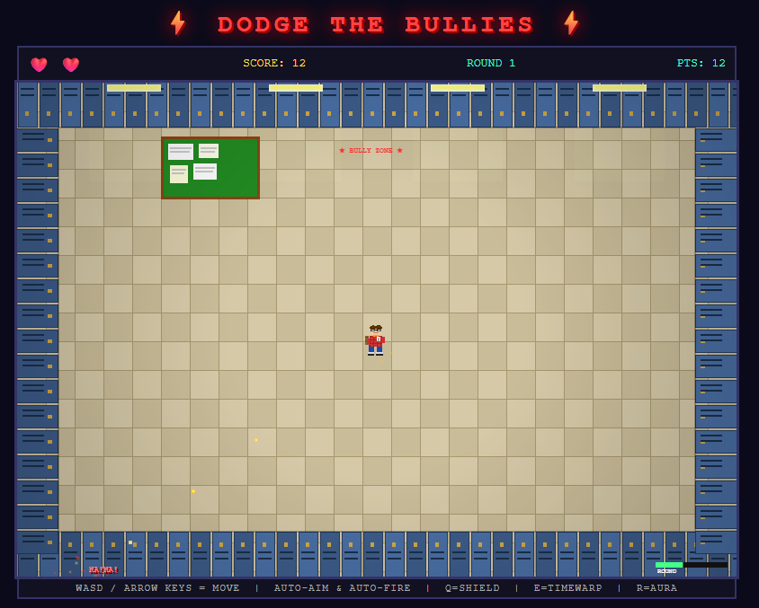
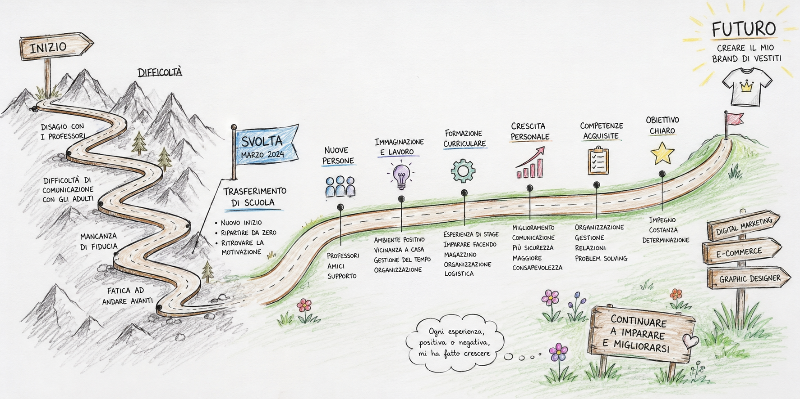

Portfolio
Owen Reyes
Studente di Informatica al terzo anno. Appassionato di programmazione, reti e tutto ciò che si può costruire con il codice.
Chi sono
Informazioni personali
Mi chiamo Owen Reyes, ho 17 anni e frequento il terzo anno dell'indirizzo Informatica. Sono curioso, mi piace risolvere problemi e imparare cose nuove. Nel tempo libero mi piace navigare su Internet a cerca di nuovi vestiti e idee.
Competenze
Cosa so fare
Le competenze tecniche acquisite durante l'anno scolastico.
HTML / CSS
Base/Intermedio
Python
Base
Arduino
Base
Reti
Base
Sistemi operativi
Base/Intermedio
Progetti
Cosa ho realizzato
I progetti sviluppati durante l'anno scolastico.

Semaforo
Questo progetto è una simulazione interattiva di un sistema semaforico (veicolare e pedonale sincronizzato) realizzato in Python con la libreria Turtle. Controllando l'interfaccia direttamente da tastiera, posso far avanzare il ciclo dei colori (Spazio), attivare il lampeggio (A) o la modalità notturna (N). Inoltre, il programma registra in tempo reale lo storico degli stati in una lista, dimostrando l'uso pratico di funzioni, variabili globali e gestione degli eventi.

Game Menu
Con GoDot, abbiamo creato un menu interattivo per un ipotetico gioco, con navigazione mouse. Il progetto include una schermata principale con opzioni di "Start Game", "Options" e "Exit", ognuna con funzionalità di base implementate.

Dodge The Bullies
Un gioco arcade sviluppato in HTML5 e JavaScript puro. Il giocatore controlla un personaggio che deve schivare i bulli che avanzano verso di lui, raccogliendo oggetti utili per sopravvivere il più a lungo possibile. Il gioco aumenta progressivamente di difficoltà con ogni round, mettendo alla prova i riflessi del giocatore. Realizzato come progetto scolastico per affrontare il tema del bullismo in modo interattivo e consapevole.
Provalo →Percorso
Il mio percorso scolastico
L'evento più significativo del mio percorso è stato il trasferimento di scuola. Il mio nuovo inizio risale a marzo 2024: sono convinto che, senza questa scelta, probabilmente non avrei continuato gli studi. Ho cambiato perché non mi sentivo più motivato e facevo fatica ad andare avanti — avevo bisogno di un ambiente in cui stare bene e ricominciare da zero.
Il trasferimento è stata una svolta importante, non solo scolastica ma anche personale: mi ha dato nuova motivazione e nuove opportunità. Un altro momento significativo è stata la formazione curriculare del terzo anno, durante la quale ho imparato concretamente come funziona un magazzino, la sua logistica e organizzazione — aspetti che si collegano direttamente al mio sogno: creare un mio brand di vestiti.
Tra gli aspetti più positivi ci sono le persone: professori e amici simpatici e disponibili che mi hanno supportato nei momenti difficili. Una delle sfide più grandi è stata imparare a comunicare con gli adulti, un problema nato già al liceo. Grazie all'esperienza in Immaginazione e Lavoro, ho lavorato su questo aspetto, migliorando gradualmente sicurezza e capacità relazionale.
Ogni esperienza, positiva o negativa, mi ha aiutato a crescere. Il mio obiettivo futuro è creare un brand di vestiti, e per arrivarci vorrei fare stage in Digital Marketing, E-Commerce o come Graphic Designer.

Curriculum Vitae
Il mio CV
Formazione, esperienze e competenze in formato sintetico.
Formazione
Operatore Informatico
Immaginazione e Lavoro — MilanoCorso triennale ad indirizzo Informatica. Programmazione Python, web design, Arduino, reti e sistemi operativi.
Liceo Scientifico
Giulio Natta — MilanoCorso quinquennale ad indirizzo Scientifico. Latino, Fisica.
Licenza Media
Scuola Secondaria di I grado — MilanoVotazione: 8/10.
Esperienze
Stage / Progetto scolastico
Prestige Group S.r.L — MilanoRiparazione e ricondizionamento di dispositivi elettronici.
Stage / Progetto scolastico
CM.Consulting — MilanoAgenzia di risorse umane, assistenza nella selezione e colloqui. Excel o Word.
Competenze tecniche
Lingue
Madrelingua
Livello B1 - scolastico
Livello B2 — scolastico
Livello A2 — base
Contatti
Dove trovarmi
Puoi contattarmi tramite email o trovare i miei lavori online.